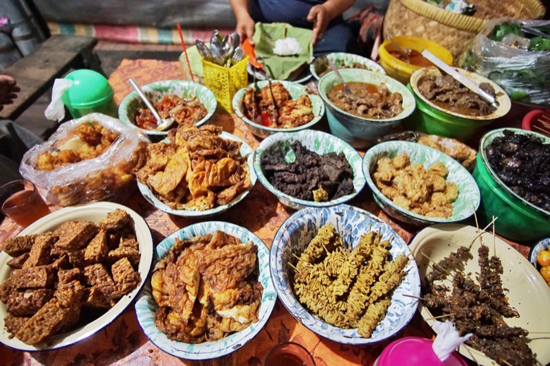

Kuliner Khas Cirebon
Cirebon adalah salah satu kota di Jawa Barat yang terkenal dengan kuliner khasnya. Salah satu makanan khas yang terkenal adalah nasi jamblang, nasi dengan lauk-pauk tradisional seperti sambal goreng, empal, dan tahu isi. Ada juga empal gentong, sup daging yang dimasak dengan rempah-rempah dan santan yang kaya rasa. Bagi pencinta makanan ringan, Cirebon memiliki tahu gejrot, tahu goreng dengan kuah kacang yang pedas dan segar. Selain itu, kota Cirebon juga memiliki banyak tempat makan yang terkenal dan populer, seperti rumah makan Sate Kambing H. Djuhaeni dan rumah makan Sunyaragi. Jadi, jangan lewatkan untuk mencoba kuliner khas Cirebon saat berkunjung ke kota ini.
Kembali